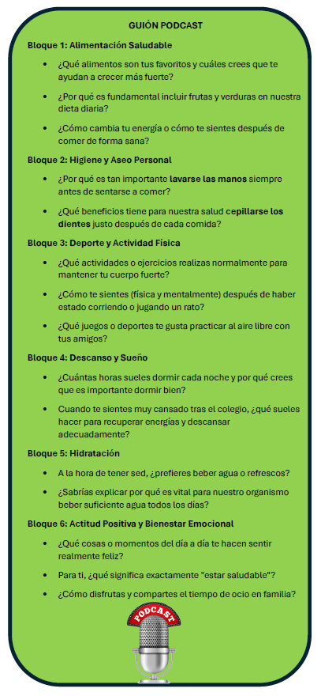

En esta SdA de 12 sesiones integro los contenidos curriculares de Lengua Castellana y Literatura con mis productos específicos (Infografía, libros de recetas y podcast) y las metodologías activas:
1. Activación y Reto
- Sesión 1 (El desafío de los "SuperSanos"). Se inicia con un debate en gran grupo sobre los hábitos alimenticios actuales. Se presenta el reto intermedio, realizar un podcast, y final, elaboración de un libro de recetas físico y digital con la aplicación Bookcreator. Se asignan los grupos fijos de trabajo cooperativo y se realiza una lluvia de ideas sobre qué palabras relacionadas con la comida conocen o deben buscar.
2. Investigación y Nutrición
- Sesión 2 (Análisis de eslóganes): Análisis de eslóganes. Lectura y análisis de anuncios publicitarios para identificar su objetivo comunicativo. Luvia de ideas para elegir el slogan de libro de recetas y del podcast.
- Sesión 3 (Compresión lectora). Ejercicio de comprensión crítica aplicado a anuncios de alimentación saludable. El alumnado debe identificar información explícita y realizar inferencias sobre la intención del emisor, extrayendo datos relevantes para su futura investigación.
- Sesión 4 (Taller de Creatividad - Infografía): En este taller, los grupos completan, van a obtener los elementos necesarios para realizar la infografía interactiva con Genially sobre hábitos saludables (imágenes e información).
- Sesión 5 (Laboratorio de información): Búsqueda guiada en internet sobre ingredientes saludables para sus futuras recetas. Se aplican criterios de seguridad digital para seleccionar fuentes fiables, centrándose en datos sobre nutrición, la importancia del agua y rutinas de higiene personal.
3. Herramientas de la Lengua y Producción
- Sesión 6 (Reglas ortográficas): Los dos puntos (Teoría y Práctica). Se aprenden las reglas de escritura de los dos puntos. Comienzan a redactar la lista de ingredientes de su receta para el libro físico. En esta sesión el alumnado, conectando con la investigación previa, digitalizará la infografía interactiva con Genially de hábitos saludables, utilizando los elementos de la sesión 4 en un centro de recursos. Esta sesión complementa la búsqueda guiada de la Sesión 5, donde se centraban más en ingredientes saludables. Toda esta información adicional obtenida a través de los enlaces de la infografía proporcionará un contenido mucho más rico y profesional para la elaboración del guion en la Sesión 10 y la posterior grabación del podcast en la Sesión 12.
- Sesión 7 (Reglas ortográficas- Aplicación práctica): Aplicación de los dos puntos. Refuerzo del uso de los dos puntos mediante la planificación de una "fiesta saludable", conectando la norma ortográfica con una situación comunicativa real.
- Sesión 8 (Clases de verbos - Acción ). Reconocimiento de las clases de verbos. Los alumnos identifican las acciones necesarias para su receta (cortar, batir, hornear).
- Sesión 9 (Clases de verbos - Libro físico de recetas). Irán cubriendo un ficha impresa de la receta (que traen de casa) que formarán parte del libro físico de recetas, asegurando la concordancia y el uso correcto de los tiempos verbales. Esta plantilla se escaneará posteriormente para realizar el libro digital con Bookcreator.
- Sesión 10 (Análisis morfológico y revisión): Análisis de las formas verbales utilizadas en sus textos. Análisis morfológico centrado en los verbos utilizados en la sesión 9. Tras asegurar la corrección lingüística mediante coevaluación, el texto de la receta se adapta a un guion estructurado para el podcast, asegurando que la transición del lenguaje escrito al oral sea fluida y profesional.
4. Digitalización y Difusión
- Sesión 11 (Libro Digital con BookCreator): Fase final de edición. Los alumnos utilizan tabletas para trasladar el trabajo físico (incluyendo las plantillas escaneadas) al formato digital. El libro se integra en el ecosistema Office 365, facilitando su publicación y el trabajo colaborativo en red.
- Sesión 12 (Grabación del Podcast de Hábitos Saludables): Utilizando el guion de la sesión anterior, el libro de recetas físico y los consejos de salud de la pirámide, los alumnos graban sus intervenciones. Se fomenta el uso de la voz como herramienta de concienciación sobre hábitos saludables.
